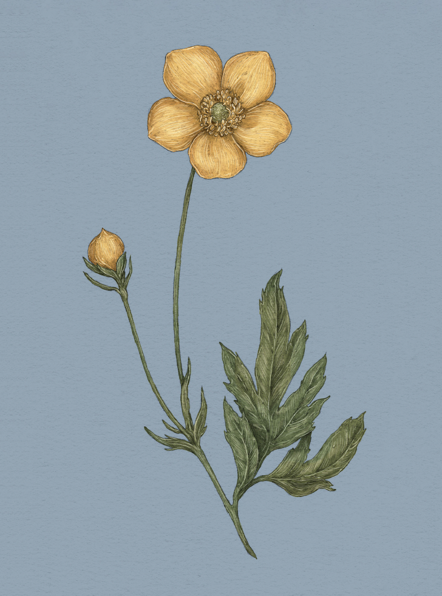

Plate BUTTERCUP
The Language of Flowers
Buttercup Study

Buttercup
Ranunculus
Definition: A bright flower associated in floriography with radiant charm.
Meaning
You are radiant with charm
Origin
Buttercup's meaning may originate with a Victorian-era childhood game. Children would hold a buttercup
under their chin and check to see if a yellow reflection appeared on the skin. If the radiant glow
appeared, then the bearer loved butter!
Pair With
- Cowslip to show a newfound affection
- Datura to show that you will not be fooled by charm